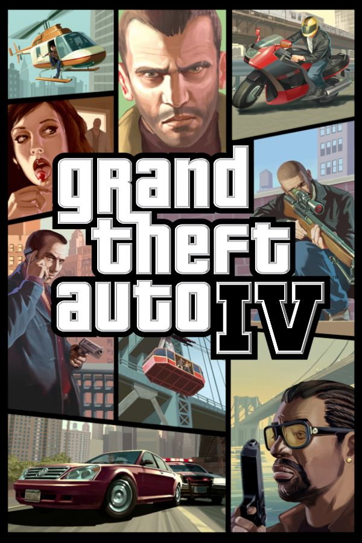

Grand Theft Auto IV es un videojuego de acción-aventura de mundo abierto desarrollado por Rockstar North. El videojuego, precedido por Grand Theft Auto: Vice City Stories, es el noveno título de la serie Grand Theft Auto y el primero de la misma en aparecer en las videoconsolas de séptima generación.